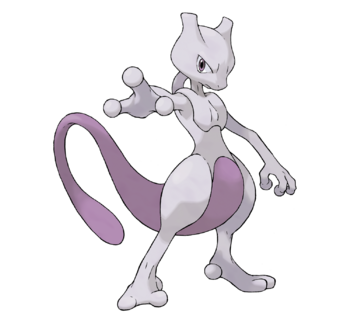
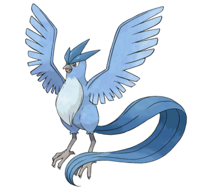
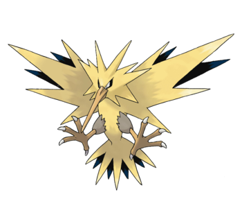

<!DOCTYPE html>
<html lang="en">

<head>
  <meta charset="UTF-8">
  <meta name="viewport" content="width=device-width, initial-scale=1.0">
  <title>Historia Pokémon</title>
  <link rel="stylesheet" href="style.css" />
  <link rel="stylesheet" href="pokedex.css" />
  <link rel="stylesheet" href="tarjeta.css" />
  <link rel="stylesheet" href="busqueda.css" />
  <link rel="stylesheet" href="historia.css" />
</head>

<body>

</body>

</html>

<div class="banner">
  <div id="contenedor"></div>
  <div id="botones-banner">
    <a id="inicio" href="./index.html">
      </img>
      &nbsp Inicio
    </a>
    <a id="pokedex" href="./pokedex.html">
      </img>
      Pokédex
    </a>
    <a id="Historia" href="./historia.html">
      </img>
      &nbsp Historia <br> <br> Pokémon
    </a>
    <a id="tutorial" href="./tutorial.html">
      </img>
      Tutorial <br> <br> Pokémon Go
    </a>
  </div>
</div>

<div class="barra">
  <div id="historiapokemon">
    </img>
  </div>
</div>

<div class="fondoBlancoHistoria">
  <div id="rectanguloHistoria">
    <div id="parteUnoHistoria">
      <div id="textoUnoHistoria">Pokémon (ポケモン), abreviando su nombre original Pocket Monsters  
        (ポケットモンスター Poketto Monsutā, Monstruos de bolsillo), es un anime
        metaserial creado por Satoshi Tajiri, Junichi Masuda y Ken Sugimori, que narra la
        historia de Ash Ketchum, un joven entrenador Pokémon de Pueblo Paleta que comienza
        un viaje para alcanzar su sueño, ser un Maestro Pokémon. La serie está basada en la saga
        de videojuegos de Pokémon también creada por Satoshi Tajiri, desarrollada por Game
        Freak y distribuida por Nintendo, que aparecieronpor primera vez en el mercado japonés
        el 27 de febrero de 1996.
      </div>
      <div id="pokemonUnoHistoria">
        </img>
      </div>
    </div>
    <div id="parteDosHistoria">
      <div id="textoDosHistoria">El éxito de los videojuegos que aún se mantiene hasta estos días, 
        hizo que su trama fuera adaptada en un anime producido por los estudios de animación OLM, 
        Inc., el cual es emitido por la cadena de televisión TV Tokyo desde que se estrenó el 1 de 
        abril de 1997. La primera temporada está compuesta por 276 episodios. OLM, Inc. ha producido 
        hasta el momento 20 películas, junto a varias miniseries especiales (también llamadas OVA) 
        como Pokémon Origins, Pokémon: Mega Evolution Special y Pokémon Generaciones; también un 
        spin-off llamado Shu-kan Pokémon Ho-así-kyoku que al ser llevado a Estados Unidos, obtuvo 
        el nombre de Crónicas Pokémon (Pokémon Chronicles), una serie de historias en las  que están 
        involucrados personajes secundarios de la serie. Otras piezas de merchandising incluyen a un 
        conjunto de mangas y novelas ligeras basadas en el anime y sus películas, videojuegos, tazos 
        y cromos de colección desarrollados por distintas empresas. 

        Videojuegos, debido al gran éxito de los videojuegos, surgió la serie de anime que de igual manera, 
        obtuvo gran aceptación por parte de los televidentes en Japón y los países de occidente. Por ello, 
        Nintendo creó 2 videojuegos.
        Pokémon Yellow fue el primer videojuego basado en la serie.​ Salió a la venta 2 de septiembre de 1998 
        en Japón, y en Norteamérica el 1 de octubre de 1999 para la consola Game Boy Color. En el año 2000, 
        en Estados Unidos, salió a la venta Pokémon Puzzle League para la consola Nintendo 64. En este título, 
        los personajes de la serie compiten en juegos de inteligencia.
        
        </div>
    </div>
    <div id="parteTresHistoria">
      <div id="pokemonDosHitoria">
        </img>
      </div>
      <div id="textoTresHistoria"> Recepción y críticas, el anime ha sido traducido en muchos idiomas y 
        distribuido en ´ muchos países. Gracias a su fama se han mantenido los niveles de audiencia televisiva 
        principalmente joven a través de todo Japón, Asia, Europa, Norteamericana ´ y América latina: 
        Creándose mucha influencia popular, videojuegos, camisetas, juguetes hasta figuras de acción, 
        tazos y todo tipo de piezas de merchandising. En 2006 en Estados Unidos, se emitió un episodio 
        especial hecho especialmente para . . conmemorar el 10 aniversario de la franquicia Pokémon. 
        Pokémon quedó en el ´ trigésimo octavo puesto, aunque más tarde se ratificó que quedó en el 
        cuadragésimo cuarto puesto de las 100 mejores series de animación de . . acuerdo al público 
        japonés en una encuesta realizada por TV Asahi en 2005. En . . . 2006, Pokémon quedó en el 
        cuadragésimo tercer puesto en una encuesta sobre el anime favorito de Japón que realizó la misma 
        cadena de televisión japonesa, TV Asahi. Desde su estreno en 1999 en América Latina, Pokémon es una 
        de las series que más tiempo ha estado en el aire, no ha dejado de emitirse, y mayor cantidad de 
        audiencia ha convocado dentro de Cartoon Network</div>
    </div>

    <div id="parteCuatroHistoria">
      <div id="textoCuatroHistoria">Principales críticas, censura en Estados Unidos a serie fue comprada en un 
        principio por la compañía 4Kids Entertainment, quien la distribuyó a toda América y Europa. Actualmente, 
        The Pokémon Company International (anteriormente Pokémon USA Inc.) se encarga de distribuir el anime luego
         del cambio de licencias de la serie que se produjo en noviembre de 2005. El anime ha sufrido una larga 
         serie de modificaciones. Las referencias al onigiri, la cultura japonesa, diálogos originales y otras 
         temáticas, a veces se editan para su emisión. 

        Episodios censurados, artículo principal: Episodios no emitidos de Pokémon durante su proceso de emisión y 
        producción realizadas en Japón y en Estados Unidos, algunos de los episodios de la serie, han causado polémica 
        por varios motivos. China ha prohibido la serie de forma definitiva, para proteger al país de la lucha de los 
        estudios de animación. El episodio Dennō Senshi Porygon (でんのうせんしポリゴン? trad. Soldado Eléctrico Porygon Z), 
        es el más conocido de todos los episodios censurados, debido a que en su emisión en Japón, más de 635 niños fueron 
        hospitalizados debido a que fueron víctimas de ataques epilépticos, por usar efectos visuales en dicho episodio.
        </div>
      <div id="pokemonTresHistoria">
        </img>
      </div>
    </div>
  </div>
</div>

<div class="banner-final">
  <div id="contenedor-final">
    <div id="contenedor-uno">
      <a href="./tutorial.html">Guía para nuevos entrenadores.</a>
      <a href="./pokedex.html">Conoce la POKÉDEX.</a>
      <a href="./historia.html">Historia pokémon.</a>
      <a href="./dinamica.html">Servicio al cliente.</a>
    </div>
    <div id="contenedor-dos">
      <div id=icono-ig>
        </img>
      </div>
      <div id=icono-fb>
        </img>
      </div>
      <div id=icono-tt>
        </img>
      </div>
    </div>
    <div id="contenedor-tres">
      <a href="./dinamica.html">Terminos y condiciones.</a>
      <a href="./dinamica.html">Aviso sobre la privacidad.</a>
    </div>
  </div>
</div>